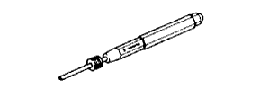
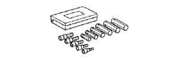
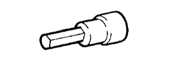
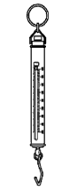
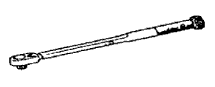

Partial Engine Assembly (2AZ-FE) Preparation [Disassembly]
 | 09213-54015 | Crankshaft Pulley Holding Tool |
 | (91651-60855) | Bolt |
| 09228-06501 | Oil Filter Wrench | |
 | 09330-00021 | Companion Flange Holding Tool |
 | 09950-50013 | Puller C Set |
 | (09951-05010) | Hanger150 |
 | (09952-05010) | Slide Arm |
 | (09953-05020) | Center Bolt150 |
| (09954-05021) | ClawNo.2 | |
| 09960-10010 | Variable Pin Wrench Set | |
| (09962-01000) | Variable Pin Wrench Arm Assembly | |
 | (09963-00700) | Pin 7 |
 | 09011-38121 | Socket Wrench (12mm) |
 | 09031-00030 | Pin Punch (φ3mm) |
| 09032-00100 | Oil Pan Seal Cutter | |
 | 09040-00010 | Hexagon Wrench Set |
| (09043-20080) | Socket Hexagon Wrench 8 | |
| 09040-00020 | Socket Hexagon Wrench Set | |
 | (09043-20120) | Socket Hexagon Wrench 12 |
| 09043-50100 | Double Hexagon10Wrench | |
| 09044-00020 | Torx Socket Wrench (E10) |
| Deep Socket Wrench (22mm) | ||
| Vernier Caliper | ||
| 2046-08 | Dial Indicator (10mm) Supplied by Banzai Ltd. | |
 | 50MB | Micrometer Measuring Range: 25 to 50mm Supplied by Banzai Ltd. |
 | ST-20 | Spring Scale Measuring Range: 0 to 20Kgf Supplied by Banzai Ltd. |
 | V-150B | V-block Supplied by Banzai Ltd. |
| HB-20 | Spring Scale Measuring Range: 0 to 20Kgf Supplied by Iyasaka Co., Ltd. | |
 | M110-25 | Micrometer Measuring Range 0 to 25mm Supplied by Iyasaka Co., Ltd. |
| M110-50 | Micrometer Measuring Range 25 to 50mm Supplied by Iyasaka Co., Ltd. |
| TM-110 | Dial Indicator (10mm) Supplied by Iyasaka Co., Ltd. | |
| VBB-150 | V-block Supplied by Iyasaka Co., Ltd. |
| MB-B | Magnetic Base Supplied by Banzai Ltd. and Iyasaka Co., Ltd. | |
 | PG-1 | Press Gauge Measuring Range: 0.025 to 0.076 Supplied by Banzai Ltd. and Iyasaka Co., Ltd. |
 | QL-50N | QL Torque Wrench (50N) Supplied by Banzai Ltd. and Iyasaka Co., Ltd. |
| Toyota Genuine Engine Oil | ||
| Utility Knife | ||
| Sandpaper (#400) | ||
| Paint | ||
| Protective Tape | ||
| Wooden Block | ||
| Vinyl Tape |